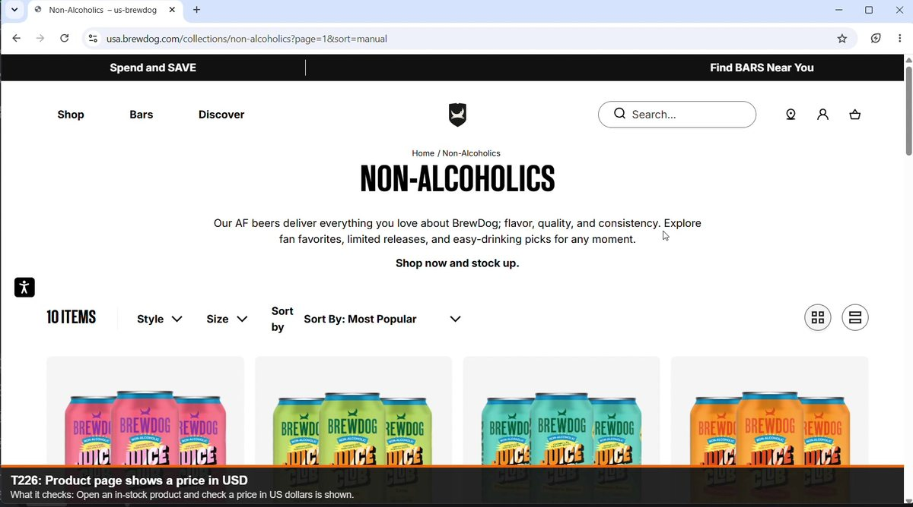
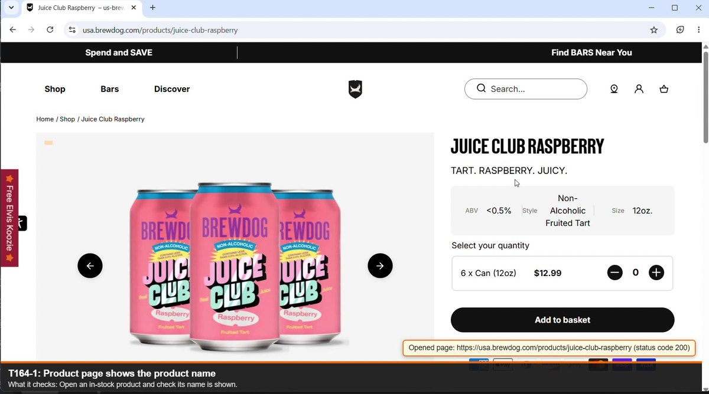
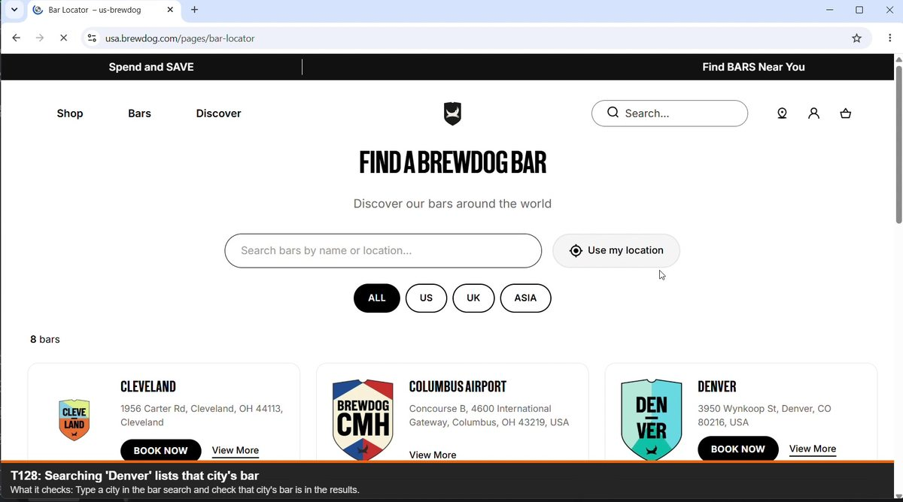
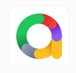
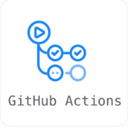
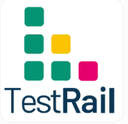

N-1 · T267
Homepage
Loads with a success status and the BrewDog title; the age gate is checked for a first-time visitor.
246 manual test cases and 72 reported bugs on the BrewDog USA store — then a UI automation framework in Python, Playwright and pytest that re-runs the scenarios worth repeating, on three browsers, on every push.
I came to this store as a manual tester first: 246 test cases executed in TestRail across desktop and mobile, 72 defects reported in Jira with steps, severity and evidence, and a No-Go release recommendation written up in the test report.
This project is the sequel. Rather than automating everything, I automated the scenarios worth running again and again — and kept the manual case numbers as the test IDs, so any red test in the report traces straight back to a written manual case. The automation then found two of those live-site bugs on its own, without being told where to look.
Every test runs against the live BrewDog USA store — real products, real stock levels, real prices, a real cart. These are frames from my own test runs; the orange bar at the bottom of each page is drawn by the framework to say which test is running.



Six real runs. The coloured boxes and the bar at the foot of the page are drawn by the framework itself, so anyone can follow what is being checked without reading a line of code.
Loads with a success status and the BrewDog title; the age gate is checked for a first-time visitor.
Finds a product that is actually in stock, then checks its name, a price in USD and an enabled “Add to basket”.
One test, four rows of data: Shipping, Contact, Terms and Privacy each point where they claim.
At 390 × 680 the homepage and a category must list products and fit with no sideways scrolling.
Fields are present, and invalid or empty input is refused — read from the browser's own validation message. Nobody is ever subscribed.
Denver and Las Vegas must each find their bar; a place with no bar must show the right message.
CLICK · PRESS: Enter. The element the test is acting on.
TYPE: 'IPA' · CHOOSE: de. Fields being filled or chosen.
READ THE TEXT · COUNT: 24 FOUND · CHECK: IS IT SHOWN?
In the page code, but not visible to a real user.
One class per area of the shop. Every test is also tagged smoke, regression
or mobile, so a quick confidence run takes two minutes instead of seven.
Everything listed here is actually used in the repository. Nothing is on this list because it looks good on a CV.
Python 3.13 · Playwright 1.64 for driving the browser · pytest-playwright for the browser fixtures · Chromium, Firefox, WebKit · PyCharm as the IDE.
pytest 9 · Page Object Model · fixtures in conftest.py · parametrize for data-driven tests · a JSON data provider · markers (smoke, regression, mobile) · xfail for known issues.

allure-pytest with steps, attachments, severity and epic/feature/story · pytest-html for a single-file report · screenshots, video and Playwright traces captured on failure · an environment file written at the start of every run.

Git and GitHub · a matrix build across three browser engines · scheduled weekly runs · build artifacts for every run · the report published to GitHub Pages.

TestRail for 246 executed cases · Jira for 72 defects with steps, severity and evidence · STD and STR documentation in Excel · the manual case numbers carried into the automated test IDs.
Claude Code · OpenAI Codex · custom skills, hooks and commands · multi-step agent workflows · prompt engineering. Used to speed up test design, refactoring and reporting — with all output reviewed, every test run against the live site and every defect reproduced manually.
One rule runs through the whole framework, and it is why there is not a single CSS selector inside any test file.
11 classes, 37 tests. Asserts only — readable as plain English.
10 page objects. Every locator and every action lives here.
The only file that calls Playwright directly. All pages inherit from it.
Tests run against the live site — never a mock, never a staging copy.
base_page.py
once, and all 37 tests inherited them. If BrewDog renames a button tomorrow, exactly one line changes.
brewdog-automation/ ├── .github/workflows/tests.yml # CI: 3 browsers, publishes the Allure report ├── data/test_data.json # the rows the data-driven tests run on ├── docs/BrewDog_STD.xlsx # the test plan, written before the code ├── pages/ # page objects (POM) │ base_page.py home_page.py collection_page.py product_page.py │ search_page.py cart_page.py login_page.py newsletter_form.py │ region_selector.py bar_locator_page.py screen_marks.py ├── tests/ # one file per area of the shop │ test_homepage.py test_shop.py test_product.py test_search.py │ test_cart.py test_footer.py test_mobile.py test_login.py │ test_newsletter.py test_region.py test_bars.py ├── conftest.py # shared fixtures + the Allure environment file ├── data_provider.py # reads the JSON test data ├── pytest.ini # run options, markers └── requirements.txt
Fixed viewport, locale and time zone, so a run cannot pass on one machine and fail on another. One fixture hunts a category for a product that is actually in stock, so no test fails because the beer sold out.
Five data sets in data/test_data.json — categories, footer links, invalid emails, countries, cities. Adding a case means editing a line of text, not Python.
Test IDs are the case numbers from my manual TestRail run. T304-1 and T304-2 are two automated tests covering one manual case; N-1…N-5 are new tests with no manual twin.
GitHub Actions runs the whole suite on every push, every pull request, every Monday morning and on demand — in three browser engines at once — then publishes an Allure report. The weekly run matters: BrewDog can change their site without telling me, and a test that passed in March can be red in April with no change to my code.
in 11 classes, 3 browsers
plus 2 known issues (xfail)
critical · 15 normal · 7 minor
to GitHub Pages on every run on main
Four epics: Browse the store, Buy a product, Customer account, Store settings and locations.
Each click, read and check is its own step with its own timing, because the page objects are decorated.
Saved on failure only, as downloadable artifacts. “It failed on my machine” is not a bug report; these are.
The live site treats datacenter traffic as a bot. When it challenges the run, those tests report as skipped with the reason instead of as false failures.
Both were first found by hand in the manual round. Both are now permanent tests marked
xfail: reported as known issues in every run without turning the pipeline red, and they
flip to XPASS the day BrewDog fixes them.
An alcohol retailer should ask a first-time visitor to confirm their age. The gate exists in the page code but is never shown, so visitors are never asked.
xfail · known issueSearching for something that matches nothing returns a page of unrelated beers and no “no results” message — so the customer believes those products matched the search.
xfail · known issueThe code, the plan it was written from, the report it produces, and the manual round it came out of.
All 37 cases with steps, expected result, data, priority and the exact run command.
Download the STD →246 cases, 72 defects and the release recommendation — the report this project grew out of.
Open the STR →pip install -r requirements.txt → playwright install →
pytest. The browser opens in slow motion with the marks drawn on the page, exactly as in
the recordings above.